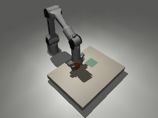

Camera-to-action · Research candidate
A local camera-to-action learner reaches 5/64 strict placements
Learning the command is only part of completing the task.
5/64 learned · 9/64 blind · 31/64 fixed · 64/64 teacher · not qualified
Inspect recorded camera and actuator evidence ↗ · Source & history · Download Markdown
Study abstract and scope
Abstract
A registered local study trains a small CPU model to predict seven PiPER motor targets from synchronized simulated RGB-D and measured robot state. After one mixed-control correction round, frozen confirmation yields 5/64 strict learner placements, 9/64 for its matched blind baseline, 31/64 for the fixed primitive and 64/64 for the authored teacher. Both paired superiority gates fail; all 16 negative controls behave as registered. Learner inference p95 is 0.447 ms, while full-boundary p95 is 36.432 ms on the measured shared Apple M5 host. The model remains a simulation-only research candidate. Independent full-study audit verifies all 452 registered attempts and 2,384,532 files with zero errors; this confirms evidence consistency without qualifying the skill. Ordinary human-video action recovery, reliable task completion and physical transfer remain open.
Status: the completed study retains the model as a research candidate. The selected learner completed 5/64 strict unseen-start placements, versus 9/64 for the matched blind learner, 31/64 for the fixed primitive and 64/64 for the authored teacher. The sealed report fails the registered qualification gates. Independent full-study audit passed on 9 November 2026 with no errors; this confirms the saved evidence, not skill qualification. No qualified downloadable skill or physical robot readiness is claimed.
Question and bounded experiment
Can a small local model learn a complete PiPER block-placement task from synchronized RGB-D, measured robot state and explicit synthetic action labels? The intended learned sequence is approach, grasp, lift, carry, release and retreat. The study uses one simulated PiPER, its existing gripper, a known rigid 40 mm block and two fixed destinations. It does not recover motor actions from ordinary human video.
All starts, controller assignments, training settings and acceptance gates were
registered before collection. The runtime is frozen at
c9a7c55531533f60e24651a99d509f721e195051; the protocol SHA-256 is
576851e321034a0f6d3cb4d0818b3a5ca97975fcc6f2c7fa30b07ffd203a2d76.
There are 72 fresh starting-position groups: 32 training, eight development and 32 confirmation. Both destinations remain together in their starting-position group. Starts span x=0.287–0.311 m and y=−0.042–−0.018 m, with the configured initial block height 0.082 m. This small interpolation domain is a deliberate first proof, not general spatial manipulation. A 3 mm inset from the prior fixed primitive's envelope buffers camera error; estimates are not clipped or replaced with simulator truth.
| Registered stage | Budget | Role |
|---|---|---|
| Initial teacher diagnostic | 4 trajectories | Verify actual motion, initial camera acquisition and complete teacher placement |
| Training teacher demonstrations | 64 episodes | Two goals for each of 32 training starts |
| Development teacher demonstrations | 16 episodes | Prediction diagnostics; excluded from fitting and normalization |
| Mixed-control corrections | 32 episodes | One training-only round; teacher chosen with probability 0.5 |
| Model development | 64 rollouts | Initial/corrected × full/blind × 16 development cases |
| Frozen confirmation | 256 attempts | 64 cases each for learner, matched blind model, fixed primitive and teacher |
| Negative controls | 16 attempts | Blank initial RGB, invalid old initial timestamps, malformed extrinsics and forced-open gripper |
The maximum registered native workload is 452 attempts, with no replacement of failed starts or hidden retry. A 20-second complete episode contains 501 320×240 RGB-D pairs at 25 Hz, 1,000 motor intervals at 50 Hz, and 20,000 native physics ticks at 1 ms. Camera capture/availability timestamps are simulated clocks; wall-clock processing is recorded separately. They do not establish physical camera-to-actuator latency.
Inputs, supervision and acceptance
The CPU NumPy model has two 64-unit hidden layers and predicts six absolute
joint targets plus one jaw target. Its 269 features contain an explicitly
historical initial visual anchor, destination, elapsed time, encoders, jaw
measurements, encoder-derived link6 body pose, previous applied servo references and
five causal history samples at 0, 40, 80, 120 and 160 ms. Standardized
features are clipped to ±10 at inference. Current missing object estimates have zero numerical
fills, an unavailable mask and their source frame's original age. The historical
anchor is never presented as a new live observation. The frozen recording names
the link6 body-origin pose tcp_position_estimate_m and
tcp_quaternion_estimate_wxyz; these legacy field names do not identify a
calibrated gripper contact point. The native task scorer instead uses a distal
site offset by 0.12003 m along link6’s local z axis. The independent auditor
reconstructs this explicit offset when comparing the two coordinate records.
Teacher phase, current teacher command, native object/contact truth and future observations are excluded. Teacher commands are synthetic labels from a privileged authored controller. In the mixed-control round, the one teacher query per step is stored separately from the command actually executed; it is not described as an operator correction or a proven recovery. The blind model uses identical source episodes and initial context but has all live and historical sensor feedback masked out. It retains past command history.
Each fit uses seed 17, 50 epochs, batch size 512 and Adam learning rate 0.003. Normalization uses training data only, including explicit missing fills and masks. Candidate selection uses development task success, critical contacts, then prediction error normalized by the same physical action scales across candidates. The matched blind model is taken from the selected stage.
Before training, every training start must have at least one successful usable teacher demonstration, and each goal must have at least 28 successes. Final qualification requires all of the following:
- At least 58/64 strict learned placements on the scheduled unseen cases.
- Positive 97.5% paired bootstrap intervals against both fixed and blind comparators, resampling whole starting-position groups with both goals paired.
- Positive comparisons also on at least 24 common admitted groups, preventing initial comparator refusals from being the only basis for improvement.
- No increase in the frequency of critical-contact episodes versus the fixed comparator; all negative controls behave as specified.
- Complete attempt accounting, independent native scoring, no privileged learner inputs and no teacher intervention during evaluation.
The teacher comparator has privileged simulation observations and is an upper reference, not evidence of human-video learning. Installation alone cannot award qualification. Failed candidates remain publishable research findings.
The fault definitions are deliberately narrow: initial_missing zeros the
initial RGB image while the physical object remains in the scene;
initial_stale sets capture and availability times to −0.2 s at episode time
zero; altered_calibration scales one rotation-matrix element by 1.1; and
open_gripper overrides issued jaw targets to 0.035 m. The first three exercise
input-contract refusal. They do not establish detection of a physically absent
object, valid-but-old frames or small valid rigid calibration errors.
Completed diagnostic evidence

An independent reader verified 24,040 files, exact camera/control/native cadences, source and frame bindings, issued/query separation, camera-position errors and independently recomputed task scores. All four teacher diagnostics completed strict placement successfully. They represent two development starting positions, each with two goals, not four independent starting groups.
| Diagnostic | Initial camera error | Available-pose error p95 | Available decisions | Longest missing stretch |
|---|---|---|---|---|
| Development 00, goal 0 | 0.196 mm | 0.314 mm | 620/1,000 | 7.24 s |
| Development 00, goal 1 | 0.196 mm | 0.504 mm | 618/1,000 | 7.28 s |
| Development 01, goal 0 | 0.249 mm | 0.816 mm | 602/1,000 | 7.96 s |
| Development 01, goal 1 | 0.249 mm | 0.816 mm | 604/1,000 | 7.92 s |
Native object displacement reached 138.6–160.0 mm, confirming actual manipulation rather than a static-camera or replay-only check. Errors above are conditional on the tracker returning an estimate. Adjacent 50 Hz decisions often reuse the same 25 Hz frame and are not independent tracking trials.
The major diagnostic finding is where visibility disappears. An offline analysis of sealed teacher-phase and perception sidecars found zero available object estimates during close, lift, transfer, place and release: 0/749 motor decisions across the four trajectories. Approach and final verification were fully visible. Teacher phase was used only to analyze this evidence, never as a model input.
Therefore sub-millimetre available-pose errors must not be described as tracking throughout manipulation. During the contact-heavy sequence the learner must rely on measured robot state and its historical initial visual context. This is a measured limitation of the frozen upright-block tracker. The registered experiment tests those remaining signals without adding camera views or substituting native object positions; its final results appear below.
Inspect the real diagnostic camera frames and action traces, independent audit, phase coverage analysis and registered protocol. The compact viewer contains diagnostic evidence only. It preserves every motor decision and copies native RGB frames byte-for-byte at 2.5 Hz from the original 25 Hz capture. Its display sampling is distinct from the camera cadence used by the controller. Full raw recordings remain separate from this compact diagnostic subset.
Completed demonstration and data-quality evidence
All 80/80 registered teacher demonstrations completed strict placement: 64/64 training episodes and 16/16 development episodes. The development recordings remain excluded from fitting and normalization. All 32 training starting-position groups have usable successful demonstrations with an available, bound initial camera estimate. Each training destination has 32 successful usable episodes, exceeding the registered minimum of 28; the sealed teacher-data gate passed with no missing training group.
| Teacher evidence | Strict successful / scheduled | Data use |
|---|---|---|
| Initial diagnostics | 4/4 | Initial camera and task checks; not additional fitting episodes |
| Training demonstrations | 64/64 | Issued-action supervision for 32 training starts × two goals |
| Development demonstrations | 16/16 | Held-out prediction and missing-observation diagnostics |
An independent readback passed with 504,840 files verified and 84 native task scores recomputed across the four diagnostics plus 80 demonstrations. This count includes the earlier four diagnostics; it is not 84 additional episodes. The audit reports no errors and executes no physics, estimator or learned model. Its protocol, sealed demonstration receipt and stage-integrity identities match the original registration and saved bytes.
The retained demonstrations-audit.json proof has SHA-256
3405d789c0b79066d142d476f1b45468463d41516350d7c80766881a6cecf753;
its evidence-inventory SHA-256 is
319074d85fcd84758d3cc464e6040f2032832179d354c4adcb86f300b743f811.
This is an audit of the diagnostic and demonstration stages only: no fitting
stage or student rollout is covered by this proof. Successful teacher actions
establish usable synthetic supervision, not successful imitation or transfer.
Measured host context
The retained hardware-native.json describes a shared local Apple M5 host
(Mac17,4, arm64) with 10 physical / 10 logical CPU cores and 24 GiB of
installed memory. The environment is Darwin 25.5.0, Python 3.12.9, NumPy 2.5.3
and MuJoCo 3.15.0, with one native worker. Native physics and the policy use the
CPU; rendering uses the existing macOS CGL graphics path. No CUDA requirement
is introduced. The hardware-context file SHA-256 is
fdc8007b27219c7c91dc600ae54a95f4a8abc64565db652002faa0f5a1e9f6d0.
Installed memory is host capacity, not the model's measured memory requirement. This shared-host setup does not establish minimum hardware, dedicated-host throughput, other-platform compatibility or physical sensor-to-actuator latency. Final pooled inference and full-loop wall-clock measurements appear below and agree with independent full-study readback. Fit costs are separate from the much longer rendering, recording and verified export.
Initial learning result: prediction is not execution
The sealed initial fitting stage contains 64,000 training samples and 16,000 held-out teacher-observation samples. The full learner fitted in 6.56 seconds and occupies 521,715 bytes; the matched blind learner fitted in 5.99 seconds and occupies 517,296 bytes. Shared byte-verified data export took a further 685.44 seconds. These are measured offline wall-clock durations on the shared host, not video-to-skill completion times. Process peak RSS reached 643,891,200 bytes after the full fit and 789,200,896 bytes after the blind fit; the second value is a process high-water mark, not the blind model's isolated memory use.
Both initial candidates completed all 16 registered development attempts and made zero strict placements. The full learner's held-out action-scale MSE on teacher observations was 0.0001133, yet its closed-loop success was 0/16. The blind learner also scored 0/16. One-step prediction on a demonstrated state does not establish execution after the model's own actions change it.
Corrected development: fewer contact violations, incomplete acquisition
The single registered mixed-control correction round and corrected fitting are complete. Both development cohorts retain every scheduled attempt: 16 full and 16 blind attempts per candidate. All 64 learned trajectories and the 16 exact matched teacher demonstrations are complete with valid native numeric scores. No failed attempt was dropped, replaced or retried.
| Development cohort | Strict placement | Never commanded jaw below 20 mm | Native grasp / lift | Critical-contact attempts | Rate-limited intervals |
|---|---|---|---|---|---|
| Matched teachers | 16/16 | 0/16 | 16/16; 16/16 | 0/16 | 1,200/16,000 |
| Initial full learner | 0/16 | 0/16 | 0/16; 0/16 | 16/16 | 15,706/16,000 |
| Initial blind learner | 0/16 | 2/16 | 2/16; 0/16 | 10/16 | 1,127/16,000 |
| Corrected full learner | 1/16 | 12/16 | 4/16; 4/16 | 0/16 | 187/16,000 |
| Corrected blind learner | 1/16 | 0/16 | 16/16; 16/16 | 9/16 | 1,175/16,000 |
The early-closure pattern from the first initial student recurs across all 16 initial full-learner attempts. Each first commands a single-finger jaw target below 20 mm while the distal tool is more than 20 mm from the block in XY. The median distance is 129.25 mm and median command time 1.22 s. None acquires bilateral object contact. Matched teachers first command closure at median 10.45 s and 3.89 mm XY separation. The initial full learner records 25,368 critical-contact native ticks, versus zero for these teachers.
The corrected full learner has a different observed failure pattern. It records zero critical-contact ticks and far fewer rate-limited intervals, but 12/16 attempts never issue a jaw target below 20 mm and never acquire bilateral or strict grasp. The other four first command closure at median 15.18 s and 5.40 mm XY separation; all four reach the native grasp and lift predicates, and one completes strict placement. The corrected model therefore has lower observed contact violations without reliable task completion. These contact counts do not establish hardware safety or physical transfer.
The corrected blind learner reaches grasp and lift in all 16 cases while completing just one strict placement. Nine attempts contain critical contacts, totalling 2,816 native ticks. Grasp acquisition alone is not the full task. This compact analysis does not attribute those remaining failures to retention, release, settling or retreat without their corresponding task predicates.
Here “closure” means an issued single-finger target, not measured finger closure or total jaw aperture. Native geometry comes from the preceding 1 ms sample at the command boundary. The two 20 mm thresholds are descriptive posthoc choices, not new acceptance gates. Closure-time and distance medians include only attempts with a closure command: four corrected-full attempts and 14 initial-blind attempts, with the no-command cases kept in all scheduled denominators. No camera/media audit or new model inference was performed by this analysis.
Frozen choice and remaining evidence
The registered ranking selects the corrected full learner and its matched corrected blind baseline. The full learner improves from 0 to 1 development placement and from 25,368 to zero critical-contact ticks. Its teacher-state action-scale MSE increases from 0.0001133175 to 0.0001734760. Success has priority over contact counts, which have priority over prediction loss; the saved choice matches that ordering. Lower teacher-state prediction error did not correspond to better task completion in these two candidates.
A separate read-only check reconstructed the ranking and verified all 11
model/stage artifacts named by the freeze, the fixed comparator and protocol.
The frozen-selection file SHA-256 is
88ef3ae4f5639dc00c2570debf099dc33d52445c9600d3d681aa634c4ddb4087.
The saved pre-confirmation flag is reported; this compact check does not
independently establish temporal chronology.
Read the descriptive findings,
all development metrics and source bindings,
and the selection cross-check.
The numeric summary checked 581 source-file identities and all 19 frozen
runtime hashes; its SHA-256 is
ae3790c8afcbbe6740ae7b0c736798a871c10a89d6eb80e5773ca0a0c158ea3d.
This remains development-only analysis. The subsequent full-study audit
checks the sealed development and confirmation records independently; these
descriptive findings do not replace frozen confirmation or award qualification.
The observed change is consistent with several possible mechanisms, including
closed-loop distribution shift and action-target scaling, but this study has
not isolated their causal effects. No hyperparameter change, extra correction
round, confirmation-driven selection or hidden retry has been introduced.
The native renderer also reports a depth-accuracy limitation when
ARB_clip_control is unavailable for mjDEPTH_ZEROFAR. Repeated warnings are
not independent accuracy trials, and their presence does not establish that
they caused these failures. Synthetic camera transforms do not validate real
depth measurements.
Frozen confirmation and qualification
All 256 registered confirmation attempts completed: 64 per controller over 32 unseen starting-position groups, with both goals paired. There were no initial refusals, missing outcomes or replacement scenes. All 32 groups were also common-admitted for both learned-versus-comparator comparisons.
| Controller | Strict success | Success rate | Native grasp / lift / carry | Critical-contact attempts / ticks |
|---|---|---|---|---|
| Selected full learner | 5/64 | 7.81% | 22 / 21 / 6 | 2/64; 122 |
| Matched blind learner | 9/64 | 14.06% | 63 / 63 / 38 | 34/64; 14,953 |
| Fixed primitive | 31/64 | 48.44% | 64 / 64 / 54 | 30/64; 2,306 |
| Authored teacher | 64/64 | 100% | 64 / 64 / 64 | 0/64; 0 |
The paired bootstrap uses the registered 10,000 resamples, seed 311402 and whole starting-position groups. The 97.5% intervals for learner-minus-comparator strict success are:
| Comparison | Difference | Paired interval, percentage points |
|---|---|---|
| Learner minus fixed | −40.625 percentage points | [−60.9375, −20.3125] |
| Learner minus blind | −6.25 percentage points | [−20.3125, +7.8125] |
The common-admitted intervals are identical because no group is excluded.
Neither comparison is positive. The learner also misses the required 58/64
placements. The no-contact-increase gate passes: 2/64 learner attempts have
critical contacts versus 30/64 fixed attempts. Complete accounting and the
recorded no-privileged-input/no-teacher-intervention gate pass. The overall
result is qualified: false, research_candidate. The success and
superiority gates are retained unchanged; the fixed comparator scored 31/64,
so this result is not explained by a perfect-comparator ceiling.
All 16 negative controls behave as registered: the 12 blank-initial-image, invalid-timestamp or malformed-extrinsics attempts refuse motion; the four forced-open-gripper attempts complete their simulation budget and fail the independent task scorer. Their scope remains the narrow input-contract and gripper interventions defined above. Refusals do not become successful tasks.
Where completion breaks
The selected learner fails to reach the native grasp predicate in 42/64 confirmation attempts. Of the 22 that grasp, one fails to lift. Of the 21 that lift, 15 fail supported carry; none of those 21 records retention loss under the frozen predicate. Five of the six supported-carry attempts meet the terminal composite and strict placement. Among those six, one fails each of the posthoc release, settling and retreat dwell checks. These are conditional, overlapping component counts, not extra attempts or new qualification gates.
Terminal appearance alone would overstate the fixed controller: it meets the terminal-only predicate in 64/64 cases, while strict success is 31/64. Supported carry succeeds in 54/64, retention is lost in 17/64 lifted cases, and 30/64 contain critical contacts. These failures overlap and must not be summed. The strict path checks expose failures that a final-image match would miss.
The blind learner's 63 grasps and 38 carries also exceed the full learner's 22 and six, yet neither candidate reliably completes the task. This bounded comparison does not show that feedback is generally harmful. It shows that this learned use of the available feedback, action representation and training data has not delivered reliable closed-loop control. Causal ablations remain future, separately registered experiments.
The full learner has an available position estimate on 55,694/64,000 motor decisions (87.02%), with a longest missing interval of 10.68 s. The blind controller's recorded tracker is available on 34,884/64,000 decisions, although its sensor features are masked. Coverage depends on the visited trajectory: staying away from manipulation can keep the object visible. Higher aggregate coverage is therefore not evidence of better manipulation or tracking during contact.
Local computation and timing
The selected corrected full model occupies 543,977 bytes and fitted/saved in 10.95 s; its matched blind model occupies 540,371 bytes and fitted/saved in 13.69 s. Both use the same 96 training episodes: 64 teacher demonstrations plus the single 32-episode mixed-control round. Shared verified export took 471.30 s, counted once for the pair. The process peak RSS for that stage is 1,055,539,200 bytes, including export and preceding fits; it is not an isolated inference memory requirement. Mixed-control episodes are retained even when unsuccessful; only 1/32 completed strict placement.
| Confirmation controller | Policy computation p50 / p95 | Full boundary p50 / p95 |
|---|---|---|
| Full learner | 0.178 / 0.447 ms | 18.775 / 36.432 ms |
| Blind learner | 0.095 / 0.254 ms | 17.821 / 35.627 ms |
| Fixed primitive | 0.166 / 0.439 ms | 18.158 / 37.593 ms |
| Authored teacher | Not separately reported | 18.587 / 38.634 ms |
Each row pools 64,000 control-boundary samples; these are not averages of episode percentiles. The full learner's tracker computation p95 is 13.393 ms, pooled over 32,064 camera acquisitions. Its full-boundary timing exceeds 20 ms on 31,708/64,000 samples. The simulator pauses for host computation; sub-millisecond policy inference does not establish a 50 Hz physical control deadline or real camera-to-actuator latency. The shared Apple M5 host context above remains a measured configuration, not a minimum hardware specification.
Final evidence and independent verification
All nine registered stages are sealed. The saved study report is complete and the posthoc summary covers all 452 scheduled attempts, including the 12 intentional negative-control refusals. It preserves failures and reconstructs terminal component predicates from native numeric evidence without rerunning physics or changing the model.
Complete saved report,
posthoc tables
and machine-readable summary
are retained with their byte identities. Report SHA-256:
0234118aea1d67ac0e2747fa5ab401e862654cb5396b2dddb0826511bf09bcbd.
Summary SHA-256:
569a967597e6e0e94a7e9cfbda3837bce568dd250c695e82d25b7a9a1e3049dd.
Fresh installation and execution
A clean local installation of reviewed source
ab9082e1ee2b2cc91c7c5fd3f1358727b3789c66 executed the selected corrected model
outside the checkout. Independent readback verified 5,010 files, 20,000
native ticks and 1,000 control intervals; the complete capture contains 501
RGB-D pairs. All 19 registered runtime files matched the freeze, and the
installed model SHA-256 was
d176b391b61b5e331bcfe1676107c53f4c0ae6110414dfed4b07d57cbb883b0e.
The single run completed with zero teacher queries, but failed the independent task scorer; the CLI returned exit code 1. This verifies honest installed execution and failure reporting, not task qualification. It was one out-of-study attempt with zero retries, excluded from the 452 registered attempts and the 64-case learner denominator. A fresh local Training Studio check installed the same corrected model; installation did not change its research-candidate status.
Public installed execution proof
SHA-256: ed0b411aaa1bafe94a6411851a42adcb4695b927801a02967fb2aedb21c1811a. This public derivative replaces only two private
local paths; all numeric evidence and outcomes are unchanged. It binds the
retained original proof SHA-256
770622dfd7b30c7f71cf762a35d05386d50598ec1bec9bdd8db5a0b1b837ee25.
The independent full-study audit completed on 9 November 2026 with zero errors, verifying 2,384,532 files and reconstructing all 452 registered attempts and saved native scores. This count includes the 12 early refusals; it does not mean 452 complete twenty-second executions. The remaining 440 recordings contain the complete execution interval. The auditor checks source bindings, group splits, clocks, action authority, model selection and final gates from sealed bytes and numeric traces. It executes no physics, estimator or learned model. All 19 registered runtime file hashes remain unchanged.
Read the full-study audit
SHA-256: 2774959f8e1a5be7283cea129da0ffea000d8375eb445140c8c7a60ab15efed8.
This passing consistency audit leaves the model unqualified. No acceptance
threshold, model selection or failed scene was changed after confirmation.
Inspect the first registered learned attempt. The new reader includes the four diagnostic recordings and the first student entry in protocol order, selected without looking at success. It retains all motor decisions and samples existing RGB frames for display at 2.5 Hz. The original diagnostic viewer is unchanged. This five-recording display is an inspectable subset, not the full 452-attempt archive or an aggregate success claim.
Publication review and remote readback remain pending. The source and cards below are frozen locally; public model/data delivery is a separate step.
This study supplies a reproducible camera-and-action learning loop whose first bounded synthetic task candidate fails qualification. It cannot establish arbitrary video-to-skill transfer, arbitrary-arm compatibility, real-time hardware operation, real-world depth or contact calibration, shoe manipulation or physical qualification. Subsequent preregistered experiments should isolate action scaling, rate-consistent target representations and correction-data collection. Separate perception experiments can measure a second camera or another explicitly uncertain observation method during grasp and carry, where the present tracker often provides no object measurements. None of those interventions was tested in this frozen study.
Engineering follow-up — 9 November 2026
These bounded engineering checks prepare the next experiment without changing this study's 452 attempts, selected model or 5/64 result.
An optional verified derived-data cache reuses strictly exported features and action labels with independently retained source, protocol and manifest pins. For one sealed demonstration containing 1,000 samples, strict export took 1.635732 s; the median of three verified cache reads was 2.952292 ms, approximately 554× faster for this preparation step. The three reads measured 2.952292, 2.830833 and 3.214208 ms. Numeric values and the dataset identity matched the strict export. This is a single-episode, warm local preparation measurement, not a training, simulation, end-to-end video-processing or robot-success improvement. Cache creation, source validation and data collection remain separate costs. Cache hits validate the pinned derived arrays; they do not reverify all raw images and sidecars. Retained measurements and prior attempts disclose a rerun after a Windows file-cleanup portability fix. These shared-host runs are not a controlled before/after comparison of implementation speed.
A complete training-data follow-up then checked all 64 teacher and 32 mixed-control training recordings: 96,000 samples across 32 starting-position groups. The two caches took 160.671 s to construct once, including strict source validation. Three subsequent validated loads of both caches plus ordered combination took 0.347, 0.280 and 0.279 s. Separate blind projections and comparisons with the four original sealed model dataset/provenance identities took 0.596, 0.491 and 0.490 s; all 12/12 identity checks passed. The full training source inventory contains 577,056 files / 18,971,932,592 bytes; derived caches total 108,804,852 bytes. Whole-process peak RSS was 1,631,633,408 bytes.
The reviewed full-training receipt
binds the four model hashes, source and protocol, original executed script and
all measurements. This was one shared-host offline preparation run with no
matched strict-export baseline, so it establishes no whole-pipeline speedup
ratio. The roughly 0.28 s repeated load-and-combine measurement excludes model
fitting and the separately reported identity checks. No development or
confirmation recordings were exported, no policy or physics ran, and the
learned 5/64 result remains unqualified. The portable reproduction helper
changes only host paths into required CLI inputs; its provenance
distinguishes it from the measured original. This benchmark-only follow-up
leaves the released cc6746a code, dev5 wheel and preview release unchanged.
An action-reference preflight checks whether alternative target representations preserve the existing actuator reference trajectory. All 4,242 bounded numerical cases, each containing 20 microsteps, agree within the predeclared 1e−12 native-unit absolute tolerance; all 24 negative contract/input cases are refused. Closed-form floating-point projection is not universally bitwise identical to the original repeated updates. This check establishes numerical equivalence under its declared tolerance, not simulated task success or physical actuator accuracy. It reads no v0.1 recordings and trains no policy.
The cache runtime and numerical preflight have separate reviewed source in PR 33,
pinned at cc6746a95669cfd69a49e32a3e6c2e5a42ce2546, and remain outside the
frozen v0.1 runtime. The cache preview release
is public as a non-latest prerelease. Anonymous downloads verified all six
assets against their recorded SHA-256 identities: the dev5 wheel, preparation
benchmark, public CLI proof, numerical protocol, numerical report and checksum
list. Fresh offline macOS wheel installation also passed.
All 36 CI checks for the released cc6746a head passed. In that pull-request workflow, the six
Visual jobs—ubuntu-latest, macos-latest and windows-latest, each with
Python 3.12 and 3.13—passed both pinned-cache verification and the existing
footage, visual-training and local-studio tests.
Public release and CI verification
retains the exact tag, commit, asset hashes and individual job links. These
software checks do not establish reproduction of the frozen native study on
all platforms or physical robot qualification.
The next control comparison also needs the exact preceding servo reference. The existing normalized float32 features cannot reconstruct that float64 quantity. A separate training-only export now preserves each episode's reset reference and preceding actually applied reference, together with the next feasible reference toward its teacher label. In mixed-control episodes that label is a teacher suggestion; it is not represented as the executed action.
One metadata-only validation covered all 96,000 training samples and preserved the original parent and combined dataset identities. Construction took 10.798 s and produced 10,832,870 bytes. Three verified paired loads took 0.303, 0.258 and 0.233 s; combination and dataset identity checks are timed separately. The validator read 294 registered metadata files. It checked final reference endpoints against the recorded commands, inheriting raw verification from the pinned parent caches; it did not reread images or native microstep traces, train a model, or run physics. Whole-process peak RSS was 1,238,597,632 bytes on a shared macOS arm64 host with Python 3.12.9 and NumPy 2.5.3.
A separate synthetic initialization check uses identical network weights and a common output scale for absolute and reference-relative predictions. All 64 reset-context comparisons were bitwise equal before clipping. Later predictions differ by the preceding-reference offset, as intended. These are synthetic input vectors, not real reset observations or learned task results. Together, the reviewed source in PR 35 prepares a fair control-representation experiment. It does not establish that small corrections improve grasping; that requires the separately registered training and closed-loop comparison. The frozen 5/64 result is unchanged. The exact source and reproduction instructions separate the original measured helper from its portable version.
This is an engineering-tool preview, not a qualified skill. A new registered learning experiment must measure whether the representation changes improve grasp timing, transport and complete placement.
A separate model follow-up now reports two real CPU fits and all eight native development attempts. Both candidates complete zero of four strict placements; neither is promoted. It retains the earlier infrastructure refusals and leaves this frozen study unchanged.
Source and reuse
The reviewed delivery source
is frozen at d89b24c82b7534a439bbaa3cac3ef5c9d3b80088, separately from the
unchanged runtime freeze above. It contains the capture, mask-aware exporter,
CPU model, study runner, installer and local Training Studio flow. The exact
source archive and wheel retain all 19 registered runtime identities.
This delivery adds only deterministic ordering of publication-card gate rows
and its regression test. It changes no simulation, learning, installer or UI
bytes from the ab9082e delivery used for the native execution above. Fresh
offline installation, 12 CLI checks, four renderer checks and six package
resources passed; the six resources also match the previous delivery.
Public delivery verification
binds source archive SHA-256
a9d95981d887e9edfa461c780efd07711e4660170d52ea7571b898a517a232dc
and wheel SHA-256
b6b116156028b8c7e2d2c3d6a061f75d7f26e5671e59639569dd766d51af2eb3.
These packaging checks execute no policy or physics and leave the original
installed-run attribution intact.
The dataset card and four model cards were generated from the same sealed
report and verified full-study audit. Their card receipt
has SHA-256 b4b976be7f33e0d40e3aead02a30bdfed32a3c0491bfbf7aee7afde1f4b73fa3.
It binds the initial and corrected full/blind model files, recorded fit costs,
failed qualification gates and source identities. All cards retain synthetic,
simulation-only research-candidate labels. The five cards render identically
from saved, inspected and reversed gate ordering; no evidence or qualification
value changed to resolve the publication mismatch.
The intended dataset destination is Hugging Face · Dvidia/piper-camera-action-v01. Publication and anonymous revision-pinned readback are still pending at this checkpoint; this destination is not asserted to contain the final release yet. No download here is labeled a qualified skill.
Original DVIDIA code and generated records use MIT; PiPER and simulator notices retain their upstream terms. The viewer includes actual native renderer output and no private human footage, credentials, model weights or redistributed robot meshes. Research writing follows this site's CC BY 4.0 license.